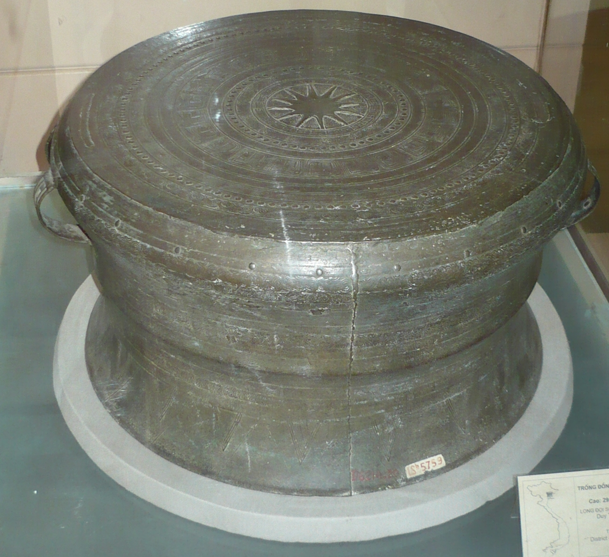

Vietnamese Music Instruments Timeline
2000 BCE

Trống Đồng
(Bronze Drum)
Đàn Đá
(Stone Lithophone)
1000 BCE
Đàn Bầu
(Monochord)
Sáo Trúc
(Bamboo Flute)
Kèn Bầu
(Gourd Oboe)
500 CE
Đàn Tranh
(16-String Zither)
Trống Cái
(Large Drum)
Sinh Tiền
(Brass Cymbals)
1000 CE
Đàn Nguyệt
(Moon Lute)
Đàn Tỳ Bà
(Pipa Lute)
Song Loan
(Double Bell)
Mõ
(Wooden Fish)
1200 CE
Đàn Nhị
(Two-String Fiddle)
Đàn Gáo
(Coconut Fiddle)
1400 CE
Đàn Tam
(Three-String Lute)
Chiêng
(Gong)
1600 CE
Đàn Đáy
(Long-Necked Lute)
Đàn Sến
(Hammered Dulcimer)
Trống Chầu
(Court Drum)
1700 CE
Đàn Tam Thập Lục
(36-String Zither)
Trống Com
(Small Drum)
1800 CE
Thanh La
(Gong Frame)
Cồng Chiêng
(Gong Set)
1900 CE
Đàn T'rưng
(Bamboo Xylophone)
K'lông Pút
(Bamboo Tubes)
Present
Day